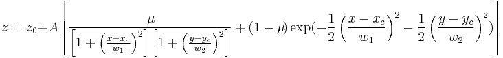
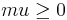
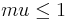

Contents |

The voigt surface.
Number: 7
Names: z0, A, xc, w1, yc, w2, mu
Meanings: z0 = z offset, A = height, xc = x center, w1 = x width, yc = y center, w2 = y width, mu = profile shape factor
Lower Bounds: w1 > 0, w2 > 0

Upper Bounds:

nlf_Voigt2D(x,y,z0,A,xc,w1,yc,w2,mu)
FITFUNC\VOIGT2D.FDF
Oberflächenanpassung